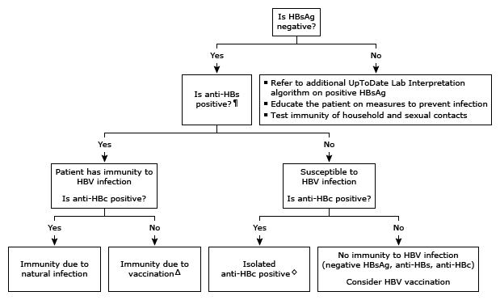

Initial evaluation of positive hepatitis serology in adults, HBsAg-negative*

This algorithm is intended for use with additional UpToDate content on acute and chronic hepatitis and HBV vaccination.
HBsAg: hepatitis B surface antigen; anti-HBs: hepatitis B surface antibody; HBV: hepatitis B virus; anti-HBc: hepatitis B core antibody. * Hepatitis B serologies are reported as either positive or negative. Interpretation of a specific abnormal test result should be based on the reference range reported with that result. ¶ A level of anti-HBs ≥10 milli-international units/mL is accepted as a surrogate marker of protection against HBV infection. Δ A positive immune response to vaccination is defined as the development of an anti-HBs titer ≥10 milli-international units/mL. Postvaccination testing is recommended in the following settings:
Ongoing risk – health care and public safety workers, sexual partners of HBsAg-positive patients
Less likely to respond to the vaccine due to chronic hemodialysis, HIV, immunosuppressive therapy
◊ The presence of anti-HBc in the absence of HBsAg and anti-HBs is uncommon in low HBV prevalence areas but can occur in 10 to 20% of patients from endemic countries. Patients with confirmed isolated anti-HBc require further evaluation and may be able to transmit HBV if they have occult HBV infection. Refer to UpToDate content related to isolated anti-HBc.